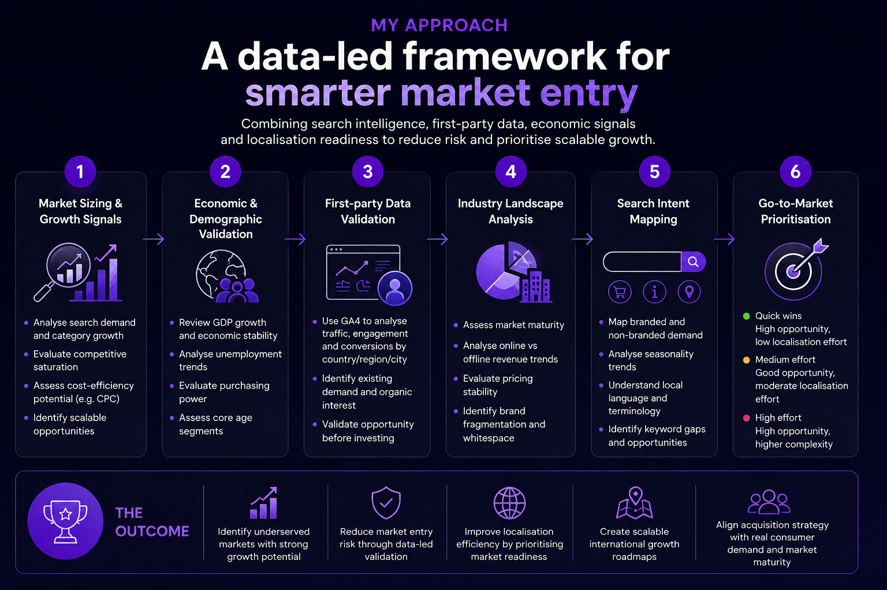

Growth Playbook
Identifying high-potential international markets through search demand, first-party data, economic signals and localisation readiness.

Expanding into new markets is rarely just about demand. It requires understanding where opportunity, consumer readiness and operational feasibility overlap.
I developed a structured framework to evaluate which international markets offered the strongest expansion potential by combining search intelligence, economic signals, first-party data and localisation complexity.
International expansion often fails because prioritisation is based on assumptions. Surface-level signals rarely tell the full story.
The challenge was to identify markets with the strongest balance of demand, economic stability, localisation feasibility and existing traffic signals.
Search demand, trends, category growth and CPC efficiency.
GDP, unemployment, purchasing power and audience readiness.
GA4 analysis to validate existing traffic, engagement and conversions from target markets before investing.
Competitive density, online maturity and whitespace opportunities.
Branded vs non-branded demand, seasonality and localisation opportunities.
Prioritisation based on opportunity size, execution complexity and localisation effort.
Connect this framework to predictive modelling to estimate international revenue potential and support investment decisions.